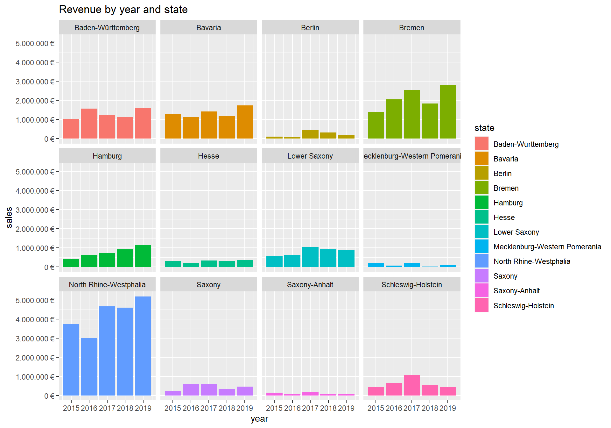

Journal (reproducible report)
Lukas Schwarz
2020-11-18
IMPORTANT: You can delete everything in here and start fresh. You might want to start by not deleting anything above this line until you know what that stuff is doing.
This is an .Rmd file. It is plain text with special features. Any time you write just like this, it will be compiled to normal text in the website. If you put a # in front of your text, it will create a top level-header.
1 Challenge: Intro to the tidyverse
Last compiled: 2020-11-30
1.1 Script
# Data Science at TUHH ------------------------------------------------------
# SALES ANALYSIS ----
# 1.0 Load libraries ----
library("tidyverse")
library("readxl")
library("lubridate")
# 2.0 Importing Files ----
bikes <- read_xlsx("DS_101/00_data/01_bike_sales/01_raw_data/bikes.xlsx")
order_lines <- read_xlsx("DS_101/00_data/01_bike_sales/01_raw_data/orderlines.xlsx")
bikeshops <- read_xlsx("DS_101/00_data/01_bike_sales/01_raw_data/bikeshops.xlsx")
# 3.0 Examining Data ----
# 4.0 Joining Data ----
bike_orderlines_joined_tbl <- order_lines %>%
left_join(bikes, by = c("product.id" = "bike.id")) %>%
left_join(bikeshops, by = c("customer.id" = "bikeshop.id"))
# 5.0 Wrangling Data ----
bike_orderlines_wrangled_tbl <- bike_orderlines_joined_tbl %>%
select(order.id, order.date, customer.id, product.id, quantity, price, name, location) %>%
mutate(total_price = price * quantity) %>%
rename(bikeshop = name) %>%
set_names(names(.) %>% str_replace_all("\\.", "_")) %>%
separate(col = location,
into = c("city", "state"),
sep = ", ")
# 6.0 Business Insights ----
# 6.1 Sales by state ----
# Step 1 - Manipulate
bike_orders_state <- bike_orderlines_wrangled_tbl %>%
transmute(total_price,state) %>%
group_by(state) %>%
summarise(sales = sum(total_price)) %>%
mutate(sales_text = scales::dollar(sales, big.mark = ".",
decimal.mark = ",",
prefix = "",
suffix = " €"))
# Step 2 - Visualize
bike_orders_state %>%
# Setup canvas with the columns year (x-axis) and sales (y-axis)
ggplot(aes(x = state, y = sales)) +
# Geometries
geom_col(fill = "#2DC6D6") + # Use geom_col for a bar plot
geom_label(aes(label = sales_text)) + # Adding labels to the bars
geom_smooth(method = "lm", se = FALSE) + # Adding a trendline
# Formatting
# scale_y_continuous(labels = scales::dollar) + # Change the y-axis.
# Again, we have to adjust it for euro values
scale_y_continuous(labels = scales::dollar_format(big.mark = ".",
decimal.mark = ",",
prefix = "",
suffix = " €")) +
labs(
title = "Revenue by state",
x = "", # Override defaults for x and y
y = "Revenue"
) +
theme(axis.text.x = element_text(angle = 45, hjust = 1))
# 6.2 Sales by Year and Category 2 ----
# Step 1 - Manipulate
bike_orders_state_year <- bike_orderlines_wrangled_tbl %>%
transmute(year = year(order_date),total_price,state) %>%
group_by(state,year) %>%
summarise(sales = sum(total_price)) %>%
ungroup() %>%
mutate(sales_text = scales::dollar(sales, big.mark = ".",
decimal.mark = ",",
prefix = "",
suffix = " €"))
# Step 2 - Visualize
bike_orders_state_year %>%
# Set up x, y, fill
ggplot(aes(x = year, y = sales, fill = state)) +
# Geometries
geom_col() + # Run up to here to get a stacked bar plot
# Facet
facet_wrap(~ state) +
# Formatting
scale_y_continuous(labels = scales::dollar_format(big.mark = ".",
decimal.mark = ",",
prefix = "",
suffix = " €")) +
labs(
title = "Revenue by year and state",
#subtitle = "Each product category has an upward trend",
fill = "state" # Changes the legend name
)
2 Data Acquisition
Last compiled: 2020-11-30
2.1 API
library(tidyverse)
library(httr)
library(jsonlite)
resp <- GET("https://pokeapi.co/api/v2/type/15")
list = resp %>%
.$content %>%
rawToChar() %>%
fromJSON()
ice_pokemon <- list[["pokemon"]]
ice_pokemon %>% head(n = 10)## pokemon.name pokemon.url slot
## 1 dewgong https://pokeapi.co/api/v2/pokemon/87/ 2
## 2 cloyster https://pokeapi.co/api/v2/pokemon/91/ 2
## 3 jynx https://pokeapi.co/api/v2/pokemon/124/ 1
## 4 lapras https://pokeapi.co/api/v2/pokemon/131/ 2
## 5 articuno https://pokeapi.co/api/v2/pokemon/144/ 1
## 6 sneasel https://pokeapi.co/api/v2/pokemon/215/ 2
## 7 swinub https://pokeapi.co/api/v2/pokemon/220/ 1
## 8 piloswine https://pokeapi.co/api/v2/pokemon/221/ 1
## 9 delibird https://pokeapi.co/api/v2/pokemon/225/ 1
## 10 smoochum https://pokeapi.co/api/v2/pokemon/238/ 12.2 Web Scraping
library(tidyverse)
library(rvest)
library(stringr)
library(jsonlite)
library(glue)
home_url <- "https://www.radon-bikes.de"
html_home <- read_html(home_url)
bike_category_tbl <- html_home %>%
html_nodes(css = ".megamenu__item > a") %>%
html_attr("href") %>%
discard(.p = ~stringr::str_detect(.x,"wear|RADON LIFE|SERVICE & SUPPORT|DE")) %>%
enframe(name = "position", value = "subdirectory") %>%
mutate(url = glue("{home_url}{subdirectory}bikegrid/"))
get_bike_data <- function(url) {
html_bike_category <- read_html(url)
bike_url_tbl <- html_bike_category %>%
html_nodes(css = ".m-bikegrid__info > a") %>%
html_attr("href") %>%
enframe(name = "position", value = "url")
bike_name_tbl <- html_bike_category %>%
html_nodes(css =".a-heading--small") %>%
html_text() %>%
str_trim() %>%
enframe(name = "position", value = "Model Name")
bike_price_tbl <- html_bike_category %>%
html_nodes(css =".m-bikegrid__price.currency_eur") %>%
html_nodes(css = ".m-bikegrid__price--active") %>%
html_text() %>%
str_extract(pattern = "[0-9]+") %>%
as.numeric()%>%
enframe(name = "position", value = "price euro") %>%
left_join(bike_name_tbl) %>%
left_join(bike_url_tbl)
}
bike_category_url_vec <- bike_category_tbl %>%
pull(url)
bike_data_lst <- map(bike_category_url_vec, get_bike_data)
bike_data_tbl_all <- bind_rows(bike_data_lst)
bike_data_tbl_all %>% head(n = 10)## # A tibble: 10 x 4
## position `price euro` `Model Name` url
## <int> <dbl> <chr> <chr>
## 1 1 2599 JEALOUS 8.0 /mountainbike/hardtail/jealous/jealous-80-2021/
## 2 2 2999 JEALOUS 9.0 /mountainbike/hardtail/jealous/jealous-90-2021/
## 3 3 3999 JEALOUS 10.0 /mountainbike/hardtail/jealous/jealous-100-2021/
## 4 4 5299 JEALOUS 10.0 EA /mountainbike/hardtail/jealous/jealous-100-ea-2021/
## 5 5 3699 JEALOUS 10.0 /mountainbike/hardtail/jealous/jealous-100-2020/
## 6 6 999 NEW JEALOUS SUPERLITE 1X /mountainbike/hardtail/jealous-frameset/jealous-superlite-1x-100/
## 7 7 999 JEALOUS AL 8.0 /mountainbike/hardtail/jealous-al/jealous-al-80-2021/
## 8 8 1299 JEALOUS AL 8.0 HD /mountainbike/hardtail/jealous-al/jealous-al-80-hd-2021/
## 9 9 1499 JEALOUS AL 9.0 /mountainbike/hardtail/jealous-al/1x12/
## 10 10 1799 JEALOUS AL 10.0 /mountainbike/hardtail/jealous-al/jealous-al-100-2021/3 Data Wrangling
library(tidyverse)
library(data.table)
library(vroom)
col_types <- list(
id = col_character(),
type = col_skip(),
number = col_character(),
country = col_skip(),
date = col_date("%Y-%m-%d"),
abstract = col_skip(),
title = col_skip(),
kind = col_skip(),
num_claims = col_skip(),
filename = col_skip(),
withdrawn = col_skip()
)
patent_tbl <- vroom(
file = "DS_101/02_data_wrangling/patent.tsv",
delim = "\t",
col_types = col_types,
na = c("", "NA", "NULL")
)
setDT(patent_tbl)
col_types_assignee <- list(
id = col_character(),
type = col_character(),
name_first = col_skip(),
name_last = col_skip(),
organization = col_character()
)
assignee_tbl <- vroom(
file = "DS_101/02_data_wrangling/assignee.tsv",
delim = "\t",
col_types = col_types_assignee,
na = c("", "NA", "NULL")
)
setDT(assignee_tbl)
col_types_patent_assignee <- list(
patent_id = col_character(),
assignee_id = col_character(),
location_id = col_skip()
)
patent_assignee_tbl <- vroom(
file = "DS_101/02_data_wrangling/patent_assignee.tsv",
delim = "\t",
col_types = col_types_patent_assignee,
na = c("", "NA", "NULL")
)
setDT(patent_assignee_tbl)
col_types_uspc <- list(
uuid = col_skip(),
patent_id = col_character(),
mainclass_id = col_character(),
subclass_id = col_skip(),
sequence = col_skip()
)
uspc_tbl <- vroom(
file = "DS_101/02_data_wrangling/uspc.tsv",
delim = "\t",
col_types = col_types_uspc,
na = c("", "NA", "NULL")
)
setDT(uspc_tbl)
#Question 1
setnames(assignee_tbl, "id", "assignee_id")
pat_ass_merged <- merge(x = patent_assignee_tbl , y = assignee_tbl ,
by = "assignee_id")
patents_corporations <- pat_ass_merged[!is.na(organization) & type == 2, .N, by = organization][order(-N)]
patents_corporations %>% head(10)
#Question 2
patent_tbl[,year := lubridate::year(date)]
patent_tbl_clean <- patent_tbl[, .(patent_id = id,year)]
table2 <- merge(x = pat_ass_merged , y = patent_tbl_clean , by = "patent_id")
patents_2019 <- table2[!is.na(organization) & year == 2019 & type == 2, .N, by = organization][order(-N)]
patents_2019 %>% head(10)
#Question 3
table3 <- merge(x = pat_ass_merged , y = uspc_tbl , by = "patent_id") %>%
unique()
patents_per_corp <- pat_ass_merged[!is.na(organization), .N, by = organization][order(-N)]
table3_expanded <- merge(x = table3 , y = patents_per_corp , by = "organization")
min_patents <- patents_per_corp[10, N]
sector <- table3_expanded[N >= min_patents, .N , by = mainclass_id][order(-N)]
sector %>% head(5)library(readr)
library(data.table)
Question1 <- read_rds("DS_101/02_data_wrangling/Q1")
Question1## organization N
## 1: International Business Machines Corporation 139091
## 2: General Electric Company 47121
## 3: Intel Corporation 42156
## 4: Hewlett-Packard Development Company, L.P. 35572
## 5: Microsoft Corporation 30085
## 6: Micron Technology, Inc. 28000
## 7: QUALCOMM Incorporated 24702
## 8: Texas Instruments Incorporated 24181
## 9: Xerox Corporation 23173
## 10: Apple Inc. 21820Question2 <- read_rds("DS_101/02_data_wrangling/Q2")
Question2## organization N
## 1: International Business Machines Corporation 9265
## 2: Intel Corporation 3526
## 3: Microsoft Technology Licensing, LLC 3106
## 4: Apple Inc. 2817
## 5: Ford Global Technologies, LLC 2624
## 6: Amazon Technologies, Inc. 2533
## 7: QUALCOMM Incorporated 2359
## 8: Google Inc. 2290
## 9: General Electric Company 1860
## 10: Hewlett-Packard Development Company, L.P. 1589Question3 <- read_rds("DS_101/02_data_wrangling/Q3")
Question3## mainclass_id N
## 1: 257 31089
## 2: 438 20280
## 3: 370 17258
## 4: 709 17094
## 5: 365 166764 Data Visualization
4.1 Challenge 1
library(tidyverse)
library(lubridate)
library(scales)
library(ggrepel)
covid_data_tbl <- read_csv("https://opendata.ecdc.europa.eu/covid19/casedistribution/csv") %>%
filter(year == 2020 &countriesAndTerritories %in% c("Spain", "France", "Germany", "United_Kingdom", "United_States_of_America")) %>%
mutate(date = make_date(year, month, day)) %>%
mutate(month = month(date)) %>%
arrange(countriesAndTerritories, date) %>%
group_by(countriesAndTerritories) %>%
mutate(cum_cases = cumsum(cases)) %>%
ungroup()
max_table <- covid_data_tbl %>%
filter(countriesAndTerritories == "United_States_of_America") %>%
slice_max(cum_cases)
covid_data_tbl %>%
ggplot(aes( x = date, y = cum_cases, color = countriesAndTerritories)) +
geom_line(size = 1, linetype = 1) +
scale_y_continuous(breaks = c(0,2.5e6,5e6,7.5e6,10e6, 12.5e6),
labels = scales::dollar_format(scale = 1e-6,
prefix = "",
suffix = "M")) +
scale_x_date(date_breaks = "1 month",
date_labels = "%B") +
theme_grey() +
theme(axis.text.x = element_text(angle = 45, hjust = 1),
plot.title = element_text(face = "bold"),
legend.position = "bottom",
legend.title = element_text(face = "bold", size = 10),
axis.title.x = element_text(face = "bold"),
axis.title.y = element_text(face = "bold")) +
scale_color_discrete(name = "Country",
labels = c("France", "Germany", "Spain", "UK", "USA")) +
guides(col = guide_legend(nrow = 2)) +
labs(
title = "COVID-19 confirmed cases worldwide",
x = "Year 2020",
y = "Cummulative Cases"
) +
geom_label_repel(aes(x=date, y=cum_cases, label=cum_cases),
data = max_table,
hjust = 1.5,
fill = "#F763E0",
color= "white")
4.2 Challenge 2
library(tidyverse)
library(lubridate)
library(scales)
library(maps)
world <- map_data("world")
covid_data_csv <- read_csv("https://opendata.ecdc.europa.eu/covid19/casedistribution/csv")# %>%
covid_data_tbl <- covid_data_csv %>%
group_by(countriesAndTerritories) %>%
summarise(deaths = sum(deaths),
population = mean(popData2019)) %>%
ungroup() %>%
mutate(mort_rate = deaths / population) %>%
mutate(across(countriesAndTerritories, str_replace_all, "_", " ")) %>%
mutate(countriesAndTerritories = case_when(
countriesAndTerritories == "United Kingdom" ~ "UK",
countriesAndTerritories == "United States of America" ~ "USA",
countriesAndTerritories == "Czechia" ~ "Czech Republic",
TRUE ~ countriesAndTerritories
))
covid_world <-left_join(world, covid_data_tbl, by = c("region" = "countriesAndTerritories"))
covid_world %>%
ggplot(aes(x = long, y = lat, fill = mort_rate)) +
geom_map(aes(map_id = region, colour = "grey"), map = world) +
scale_colour_manual(values=c('grey'),
guide = FALSE) +
scale_fill_continuous(name = "Mortality Rate",
low = "#fc8d59", high = "#7f0000",
limits = c(0,0.0012),
breaks = c(0.00,0.0003,0.0006,0.0009,0.0012),
labels = c("0.00 %", "0.03 %", "0.06 %", "0.09 %", "0.12 %")) +
theme(axis.ticks = element_blank(),
axis.title = element_blank(),
axis.text = element_blank()) +
labs(
title = "Confirmed COVID-19 deaths relative to the size of the population",
subtitle = "More than 1.2 Million COVID-19 deaths worldwide",
caption = "Date: 30/11/2020",
x = "",
y = ""
)